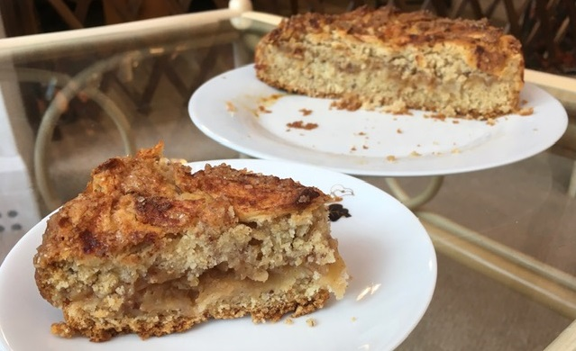

Crumbly Apple Cake
Ingredients:
-
100g of Butter or Margarine
-
200g of Flour
-
1/2 Cup of Sugar
-
2 Eggs, Apple Puree or any other Substitute
-
1 tsp of Baking Powder
-
Apples
-
Cinnamon

Method:
-
Chop up the apples and sprinkle them with cinnamon.
-
Mix the softened butter, sugar, pinch of salt, vanilla and the eggs or substitute.
-
Then mix in the flour and baking powder into the mixture.
-
Pour half of the mixture into the cake pan and lay apples on top of it.
-
Pour the rest of the mixture onto the apples and smooth it out.
-
Lay out the rest of the apples neatly on top and sprinkle them with some sugar and cinnamon.
-
Put in the preheated oven for 40 minutes and only cut it when it cools down fully.